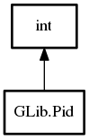

Pid
Object Hierarchy:
Description:
A type which is used to hold a process identification.
On UNIX, processes are identified by a process id (an integer), while Windows uses process handles (which are pointers).
GPid is used in GLib only for descendant processes spawned with the g_spawn functions.
Namespace: GLib
Package: glib-2.0
Inherited Members:
All known members inherited from struct int